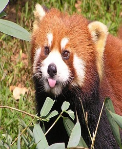
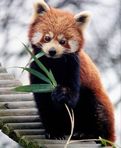
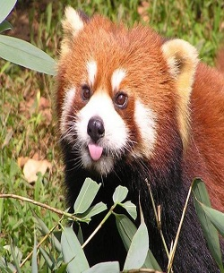
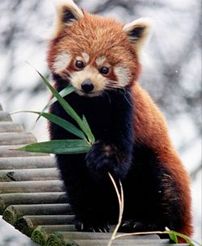

Información General
El panda rojo o panda menor (Ailurus fulgens) es una especie de mamífero omnívoro de la familia Ailuridae, aunque se había clasificado dentro de las familias de los prociónidos y de los úrsidos. Es la única especie del género Ailurus, y la única de la familia Ailuridae; se halla dentro de las especies en peligro de extinción, ya que sus poblaciones se encuentran amenazadas por la pérdida de hábitat, la caza furtiva y la endogamia, y están protegidos por las leyes nacionales de algunos países.
 



Enlaces a sitios Relacionados
Sitio de Viaje a Chinazoobarcelona
curiosidades-caracteristicas-panda-rojo